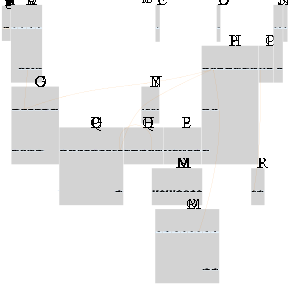
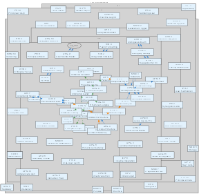
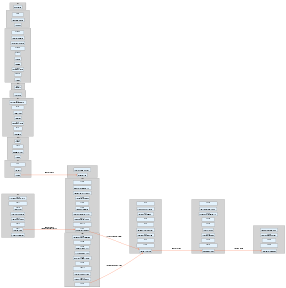
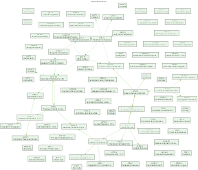
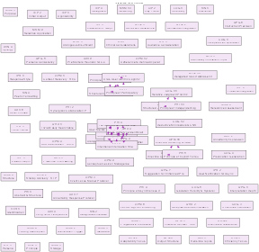

Complete Knowledge Graph

Full network overview showing all 85 directives, categories, and 189 relationships. Best starting point for understanding the complete system structure.
Hub & Authority Nodes
Highlights the most connected directives: COG-6 (Ambiguity Cartography) and OPM-8 (Conceptual Lexicon Management) with 7 connections each.
Directives Network

Clean view of directive interconnections using force-directed layout. Shows natural clustering and relationship patterns without category grouping.
Cross-Category Bridges

Strategic connections between directive categories. Shows how CIP informs IPR, PHI guides QPG, and other architectural relationships.
Semantic Relationships

Connections based on semantic similarity and keyword matching. Reveals thematic clusters and conceptual relationships.
Inspirational Clusters

Groups directives by shared inspirational sources: McLuhan-inspired, HSE-inspired, A-Covert-inspired, and Noise-Reduction approaches.